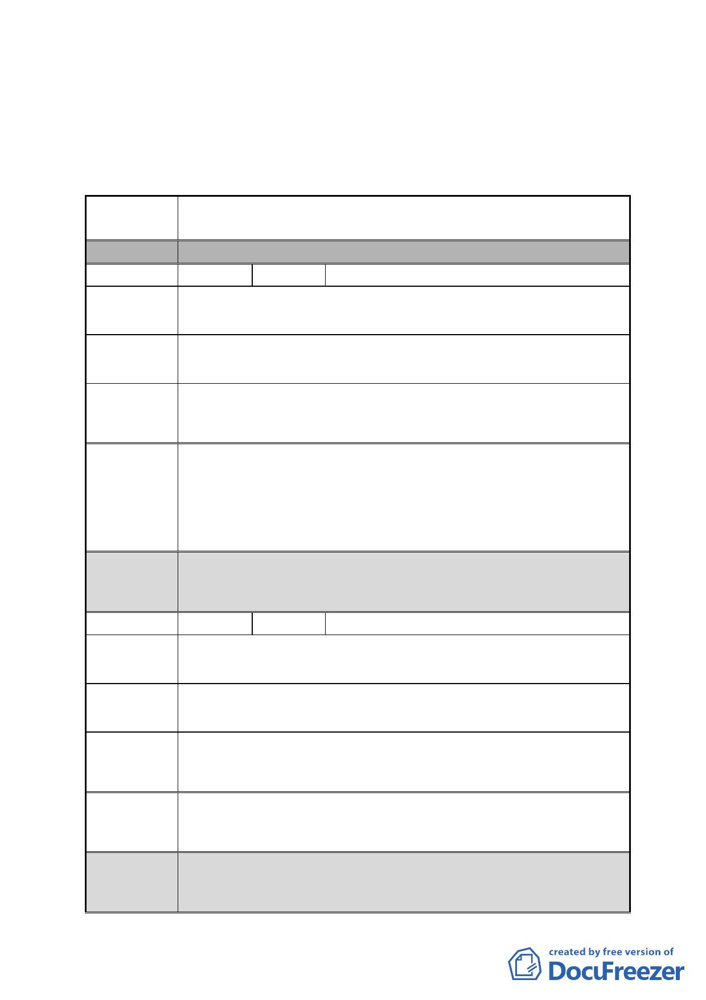

應說明辦理，另李議員彥秀所提書面意見納入本案公民或團
體陳情意見綜理表。
臺北市都市計畫委員會 公民或團體陳情意見綜理表
案 名 擬定臺北市南港區鐵路地下化沿線土地細部計畫案
分區
編號
陳情地點
A區
1 陳情人 林柏君
忠孝東路六段 81 巷 4 號（南港區玉成段三小段 548 地號）
（第三種工業區）
陳情理由
政府關心小市民得來不易資產，可以適當給予小市民的極少
建議辦法 資產，再重新規劃時，再多一些小優惠的辦法。
市府回應
說明
都委會
決議
本案陳情地點位屬 AR-2，經內政部審定之主要計畫係以更新
方式開發並原則同意朝向商業區規劃，但應另案研擬都市更
新事業計畫及變更都市計畫書圖草案。另為促進該區未來開
發，已於本案主要計畫劃定為更新地區，故該地區可以自辦
更新方式開發，適用都市更新獎勵
1.本陳情地點非屬修正後細部計畫範圍。
2.同意以市府回應說明辦理。
編號
陳情地點
陳情理由
建議辦法
2 陳情人 林柏甫
忠孝東路六段 75 號（南港區玉成段三小段 548 地號）
（第三種工業區）
因應都市變化快速，平民百姓的小資產願配合政府都市計畫
規劃。
希望能再有優惠小地主長久居住的市民辦法，如萬板、新板
特區的優惠等。
市府回應 同編號 1。
說明
都委會 1.本陳情地點非屬修正後細部計畫範圍。
決議 2.同意以市府回應說明辦理。
- 17 -